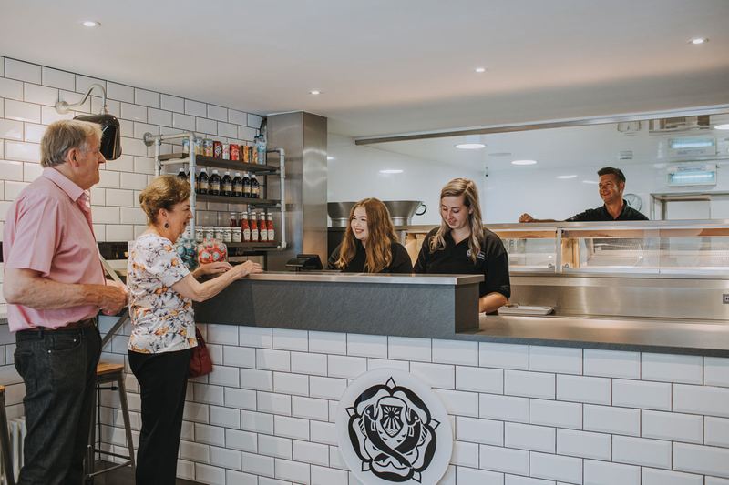
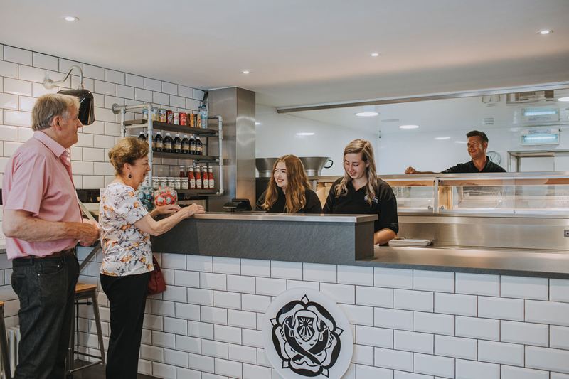
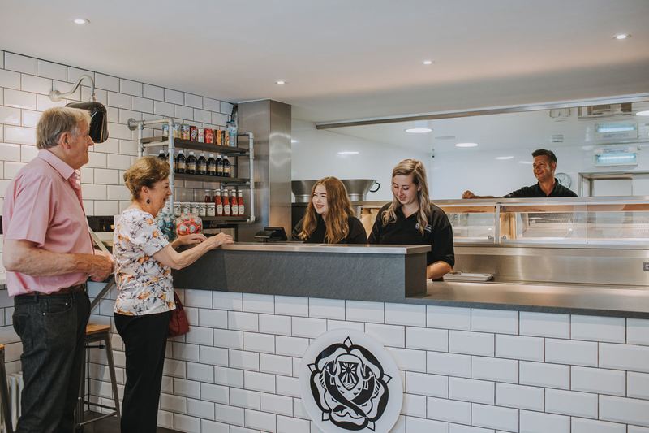

Located in Middleton-on-Sea in West Sussex, our shop has been serving quality fish and chips for over 80 years. We only use fish certified by the Marine Stewardship Council and our potatoes are specially selected and sourced specifically for frying. Here at Ye Olde Fish & Chippe Shoppe we prepare and cook your fish and chips using traditional methods gained by years of experience. Using only the finest of fish with freshly cut chips prepared every day from the best British potatoes. All our fish is freshly cooked for you. Our top of the range cooking technology is computer controlled and features built-in oil filtration to ensure a good fry everytime. We can even fry your fish in gluten free batter if required, just let us know in advance! From all of us here, we look forward to welcoming you to the shop and feeding you soon!
